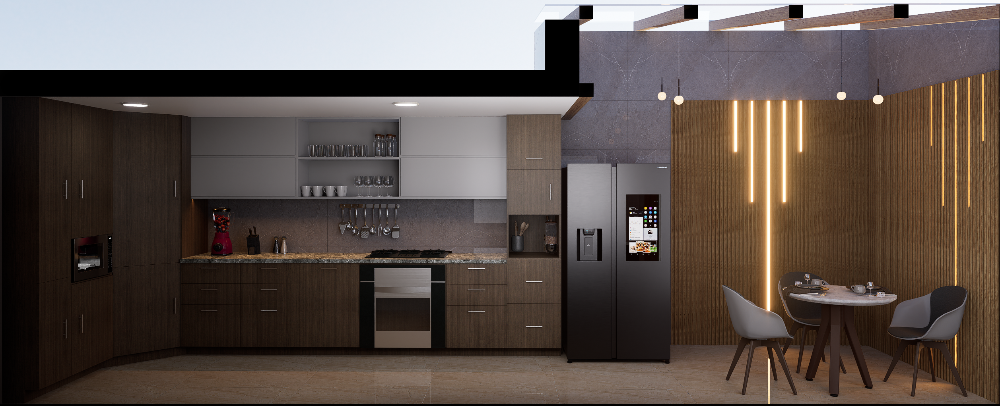
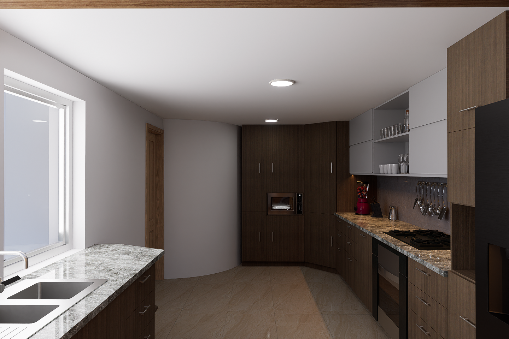

Remodelación de Cocina
Intervención integral que transforma una cocina convencional en el núcleo social de la vivienda. La propuesta integra materiales nobles, iluminación en capas y una distribución abierta que fomenta la convivencia, convirtiendo el acto de cocinar en una experiencia compartida.
Concepto
La cocina deja de ser un espacio aislado y pasa a convertirse en el núcleo de la vivienda. El comedor diario se integra directamente al área de preparación, generando una relación mucho más abierta y familiar. La intervención trabaja sobre tres ideas principales: integración social de la cocina, contraste entre materiales cálidos y sobrios, y amplitud visual mediante iluminación y continuidad espacial.




Materialidad
Mobiliario en madera oscura tonalidad nogal que aporta elegancia y profundidad. Muebles superiores en tonos claros que equilibran el peso visual. Mesadas en granito o cuarzo con vetas naturales. Porcelanato brillante en pisos que refleja la luz y amplía visualmente el espacio.
Iluminación
Sistema de iluminación en capas: plafones empotrados para luz general homogénea, luminarias colgantes sobre el comedor para jerarquía espacial, y LED lineal integrado en paneles de madera como recurso arquitectónico decorativo que enfatiza la verticalidad y aporta dinamismo.